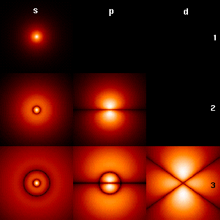

Scientific inquiry into the wave nature of light began in the 17th and 18th centuries, when scientists such as
Robert Hooke,
Christiaan Huygens and
Leonhard Euler proposed a wave theory of light based on experimental observations. In 1803, Thomas Young, an English polymath, performed the famous double-slit experiment that he later described in a paper entitled On the nature of light and colours. This experiment played a major role in the general acceptance of the wave theory of light.
Mathematical Formulations
One kind of interpretation
In the mathematically rigorous formulation of quantum mechanics developed by Paul Dirac, David Hilbert, John von Neumann, and Hermann Weyl, the possible states of a quantum mechanical system are represented by unit vectors (called state vectors). Formally, these reside in a complex separable Hilbert space—variously called the state space or the associated Hilbert space of the system—that is well defined up to a complex number of norm 1 (the phase factor). In other words, the possible states are points in the projective space of a Hilbert space, usually called the complex projective space. The exact nature of this Hilbert space is dependent on the system—for example, the state space for position and momentum states is the space of square-integrable functions, while the state space for the spin of a single proton is just the product of two complex planes. Each observable is represented by a maximally Hermitian (precisely: by a self-adjoint) linear operator acting on the state space. Each eigenstate of an observable corresponds to an eigenvector of the operator, and the associated eigenvalue corresponds to the value of the observable in that eigenstate. If the operator's spectrum is discrete, the observable can attain only those discrete eigenvalues.
Applications

Property Density
Quantum mechanics has had enormous success in explaining many of the features of our universe. Quantum mechanics is often the only tool available that can reveal the individual behaviors of the subatomic particles that make up all forms of matter (electrons, protons, neutrons, photons, and others). Quantum mechanics has strongly influenced string theories, candidates for a Theory of Everything (see reductionism).
Quantum mechanics is also critically important for understanding how individual atoms combine covalently to form molecules. The application of quantum mechanics to chemistry is known as quantum chemistry. Relativistic quantum mechanics can, in principle, mathematically describe most of chemistry. Quantum mechanics can also provide quantitative insight into ionic and covalent bonding processes by explicitly showing which molecules are energetically favorable to which others and the magnitudes of the energies involved. Furthermore, most of the calculations performed in modern computational chemistry rely on quantum mechanics.
Philosophical Implications
Since its inception, the many counter-intuitive aspects and results of quantum mechanics have provoked strong philosophical debates and many interpretations. Even fundamental issues, such as Max Born's basic rules concerning probability amplitudes and probability distributions, took decades to be appreciated by society and many leading scientists. Richard Feynman once said, "I think I can safely say that nobody understands quantum mechanics." According to Steven Weinberg, "There is now in my opinion no entirely satisfactory interpretation of quantum mechanics."
The Copenhagen interpretation - due largely to the Danish theoretical physicist Niels Bohr - remains the quantum mechanical formalism that is currently most widely accepted amongst physicists, some 75 years after its enunciation. According to this interpretation, the probabilistic nature of quantum mechanics is not a temporary feature which will eventually be replaced by a deterministic theory, but instead must be considered a final renunciation of the classical idea of "causality." It is also believed therein that any well-defined application of the quantum mechanical formalism must always make reference to the experimental arrangement, due to the conjugate nature of evidence obtained under different experimental situations.